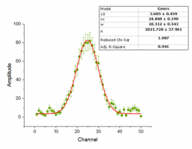
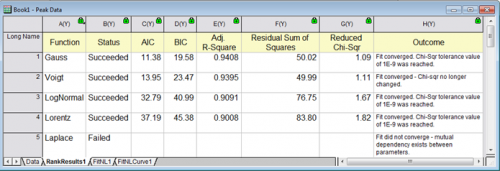

In OriginPro können Sie das Hilfsmittel Modelle in Rangfolge bringen verwenden, um mehrere Funktionen in einer festgelegten Kategorie für einen Datensatz anzupassen und in eine Rangfolge zu bringen. Anschließend wird das beste Anpassungsmodell in einem Bericht ermittelt. Die Ergebnisse können nach Werten gemäß Akaikes Informationskriterium (AIC) und Bayessches Informationskriterium (BIC) in eine Rangfolge gebracht werden.
|  |  |
Dazu klicken Sie auf Analyse: Anpassen: Modelle in Rangfolge bringen, um den Dialog funcRank zu öffnen. Dieser Dialog verwendet die X-Funktion funcRank.
Die Bedienelemente des Dialogs werden in der untenstehenden Tabelle aufgelistet.
| Neu berechnen | Der Modus Neuberechnung wird für die Analyse festgelegt. Optionen sind Manuell, Auto oder Kein. |
|---|---|
| Form der Eingabedaten | Wählen Sie die Datenform: XY-Daten oder XYZ-Daten. |
| Eingabedaten | Eingabedatenbereich Sie können die XY(Y-Fehler)- oder XYZ-Spalten mit der dreieckigen Schaltfläche rechts von dem Bearbeitungsfeld auswählen. |
| Funktionsauswahl |
Wählen Sie eine Kategorie für eine Anpassungsfunktion, legen Sie die Funktionen unter dieser Kategorie fest und verwenden Sie diese Funktionen.
|
| Max. Anzahl der Iterationen | Legen Sie die maximale Anzahl der Iterationen fest, die durchgeführt werden, wenn Sie auf die Schaltfläche Fit klicken. Der Standardwert ist 100. |
| Optionen der Anpassungsergebnisse |
Legen Sie zusätzliche Daten fest, die berechnet und ausgegeben werden sollen. Wenn keine festgelegt sind, wird nur Status, AIC und BIC ausgegeben.
|
| Berichtsdaten | Legen Sie fest, wo die Ergebnisse ausgegeben werden. |